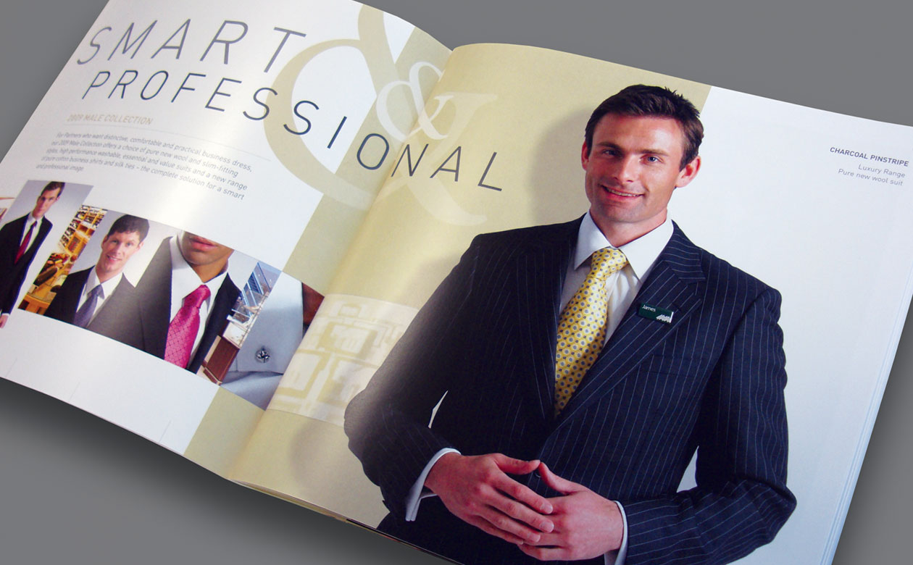
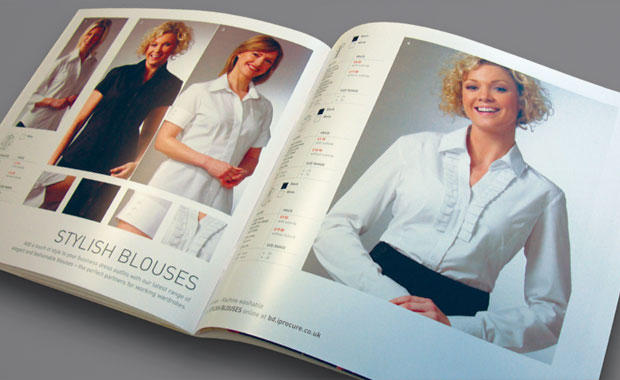
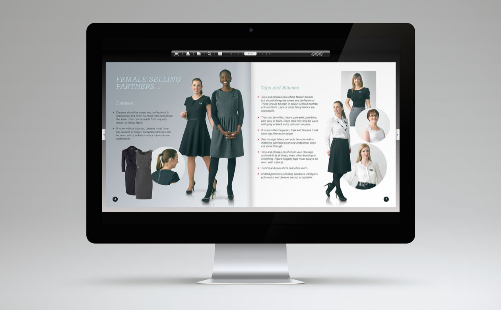

Outstanding examples of corporate communications that demonstrate a real understanding of our business…

Imaginative design and strong visual themes and messages characterise our portfolio of brochures, guides and support literature produced for the John Lewis Partnership. An ability to understand and articulate the unique ethos of the Partnership has proved to be a vital element in the development of effective communications.
Outstanding examples of corporate communications that demonstrate a real understanding of our business…